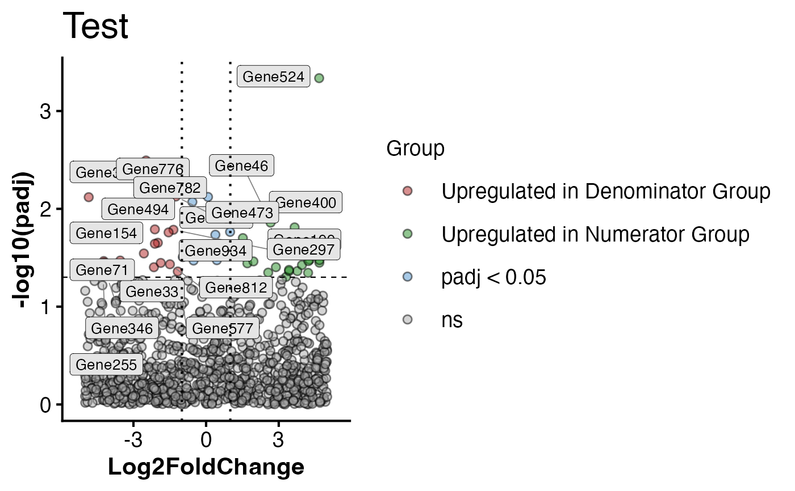

PlotVolcano.RdPlot volcano plot from a geneda object. Requires that you have ran
SetDEGs on your object following differential expression in DESeq2.
PlotVolcano(object, assay, alpha, l2fc, den, num, title = NULL)A geneda object containing DEGs from SetDEGs method
The DEG slot to use for visualization
Threshold for adjusted p-values (padj column from DESeq2)
Absolute value log2Fold-change magnitude threshold (log2FoldChange column)
Denominator (reference level for comparison, num vs. den)
Numerator (numerator level for comparison, num vs. den)
Optional character vector of what plot should be titled.
A ggplot2 object
# \donttest{
mock_norm <- matrix(rnorm(5000 * 6, mean = 0, sd = 2), nrow = 5000, ncol = 6)
colnames(mock_norm) <- paste0("Sample", 1:6)
rownames(mock_norm) <- paste0("Gene", 1:5000)
# Sample metadata
mock_meta <- data.frame(condition = c("A","B","A","B","A","B"),
row.names = colnames(mock_norm))
# Construct GenEDA object
obj <- GenEDA(normalized = mock_norm, metadata = mock_meta)
# make dummy DEG table
n <- 1000
genes <- paste0("Gene", 1:n)
log2FoldChange <- runif(n, min = -5, max = 5)
padj <- runif(n, min = 0, max = 1)
df <- data.frame(
log2FoldChange = log2FoldChange,
padj = padj,
stringsAsFactors = FALSE)
rownames(df) <- genes
obj <- SetDEGs(obj, df, "DEGs")
PlotVolcano(obj, "DEGs", 0.05, 1, "Denominator Group", "Numerator Group", "Test")
#> Warning: Using `size` aesthetic for lines was deprecated in ggplot2 3.4.0.
#> ℹ Please use `linewidth` instead.
#> ℹ The deprecated feature was likely used in the RGenEDA package.
#> Please report the issue to the authors.
#> Warning: ggrepel: 13 unlabeled data points (too many overlaps). Consider increasing max.overlaps
#> Warning: ggrepel: 3 unlabeled data points (too many overlaps). Consider increasing max.overlaps

# }